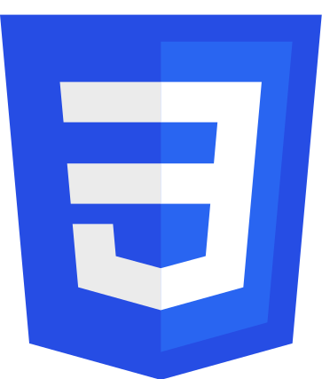

T'Keya Joy Stevens
Software Engineer
She is a developing Software Engineer; working every day to improve her skills with the goal to become
the best developer she can be. She's known since senior year of High School that she wanted to get into
web development
after watching her mother play around with HTML, and so she started to study HTML, CSS, JavaScript and
PHP. However after realizing she had no clue on how to put her knowledge together to create actual
applications, this lead her to fall off her journey.
After a few years of retail and finding herself thinking of ways she would improve the software her
store used for the better, she found herself longing to get into the tech world again. Therefore she
started looking for bootcamps to attend that would be compatible with her personal situation. This is
when she, or rather her mother, found Pursuit; a 10-month coding bootcamp meant to help those in
marginalized communities learn to code. Here is when her journey officially begins.

